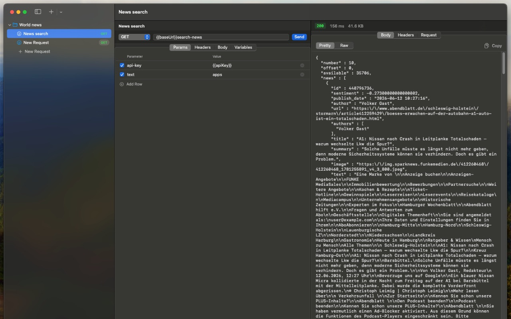
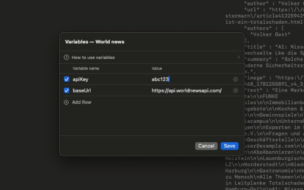

Fetcher
A lightweight HTTP client for testing APIs on your Mac, without the bloat.
No account. No sync. No team plans. Just a clean, fast app that lives on your Mac.
A lightweight HTTP client for testing APIs on your Mac, without the bloat.
No account. No sync. No team plans. Just a clean, fast app that lives on your Mac.

GET, POST, PUT, PATCH, DELETE, HEAD and OPTIONS. Add query params, custom headers and a request body (JSON, plain text or form data), then see the response status, headers and body in a split view.
Every request is saved, so you can come back to it and send it again.
Organise requests into collections, one per project or API.
Define variables like {{baseUrl}} or {{token}} once, then use them in URLs, headers and request bodies. Each collection has its own, so switching between environments is as simple as editing a value.

Export any collection to a JSON file you can read, share or keep as a backup.
Everything is stored locally in the app's data folder. Nothing leaves your Mac unless you export it.
Fetcher is made by me, Matt Shaw. If you find a bug or there's something you'd like it to do, send me a message.